Myriopholis
The genus Myriopholis (family Leptotyphlopidae) has 24 living species in SnakeList (none venomous), recorded in 50 countries.
- 24living species
- 24non-venomous
- 50countries
About the genus
A genus of the family Leptotyphlopidae (thread snakes).
Species
Showing 24 species
- No photo yetAdler's Worm SnakeMyriopholis adleri
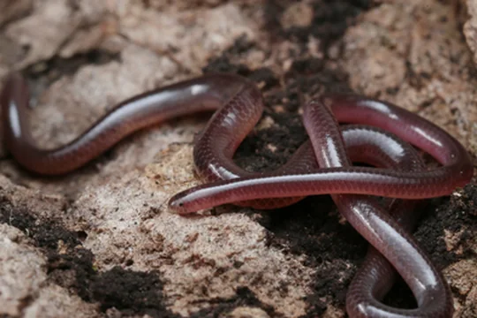
Bouet's Worm SnakeMyriopholis boueti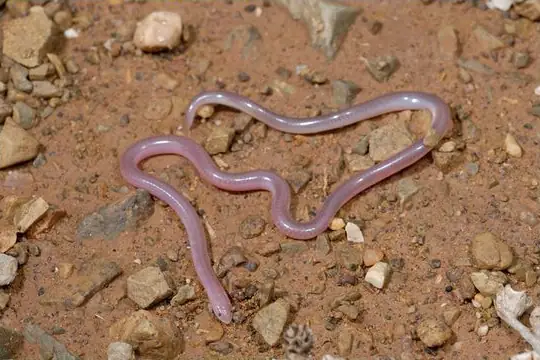
Boulenger's Blind SnakeMyriopholis macrura- No photo yetBury's Worm SnakeMyriopholis burii
 Cairo Blind SnakeMyriopholis cairi
Cairo Blind SnakeMyriopholis cairi- No photo yetCameroon Thread SnakeMyriopholis perreti
- No photo yetEritrean Worm SnakeMyriopholis erythraeus
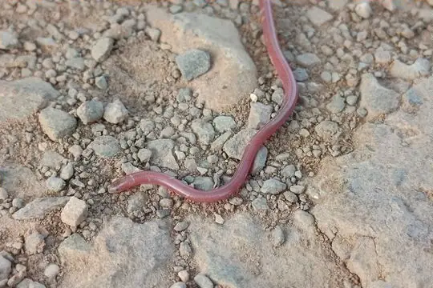
Gambia Blind SnakeMyriopholis algeriensis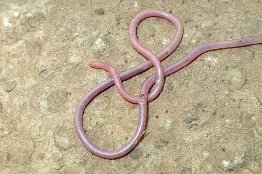
Hook-snouted Worm SnakeMyriopholis macrorhyncha- No photo yetIonides' Worm SnakeMyriopholis ionidesi
- No photo yetLanza's Worm SnakeMyriopholis lanzai
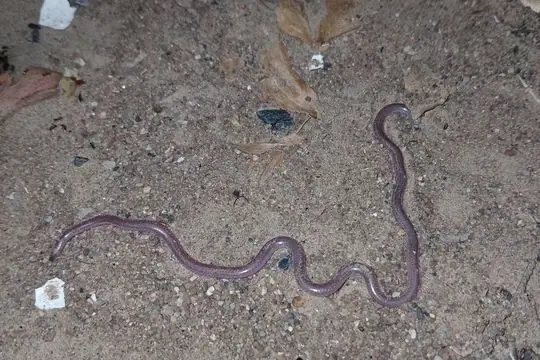
Long-tailed Thread SnakeMyriopholis longicauda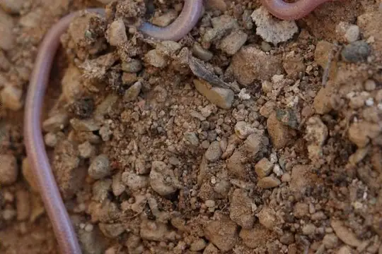
Nurse's Blind SnakeMyriopholis nursii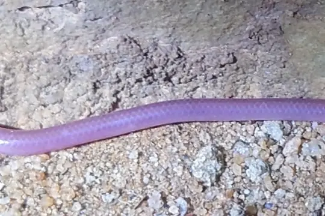
Parker's Worm SnakeMyriopholis parkeri- No photo yetRoux-Estève's Worm SnakeMyriopholis rouxestevae
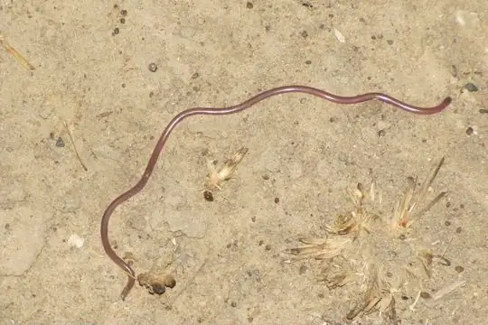
Sahel Thread SnakeMyriopholis narirostris- No photo yetScortecci's Blind SnakeMyriopholis braccianii
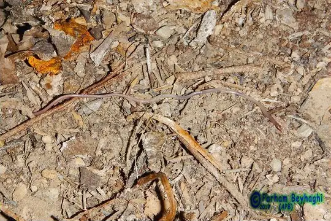
Sindh Thread SnakeMyriopholis blanfordi- No photo yetSocotra Island Blind SnakeMyriopholis filiformis
- No photo yetTana Worm SnakeMyriopholis tanae
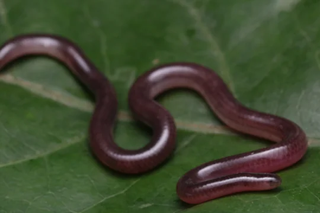
White-bellied Worm SnakeMyriopholis albiventer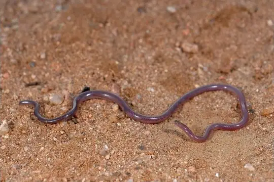
Wilson's Blind SnakeMyriopholis wilsoni- No photo yetYemen Blind SnakeMyriopholis yemenica
- No photo yetMyriopholis occipitalis
No snakes in Myriopholis match.
About the genus Myriopholis
- Distribution: living species recorded in 50 countries, on 2 continents: Africa, Asia.
- Family: Leptotyphlopidae.
- Countries and territories: Afghanistan, Algeria, Benin, Botswana, Burkina Faso, Cameroon, Central African Republic, Chad, Egypt, Equatorial Guinea, Eritrea, Eswatini, Ethiopia, Gabon, Gambia, Ghana, Guinea, Guinea-Bissau, India, Iran, Iraq, Israel, Ivory Coast, Jordan, Kenya, Libya, Malawi, Mali, Mauritania, Morocco, Mozambique, Niger, Nigeria, Oman, Pakistan, Saudi Arabia, Senegal, Somalia, South Africa, South Sudan and 10 more.
Compare its species
Its living species side by side. Lengths come only from SnakeList’s reviewed, sourced accounts; the others are left blank rather than guessed.
| Species | Venom | Recorded in | Adult length (reviewed accounts) |
|---|---|---|---|
| Adler's Worm Snake Myriopholis adleri | Non-venomous | 10 countries (Africa) | No reviewed account yet |
| Bouet's Worm Snake Myriopholis boueti | Non-venomous | 7 countries (Africa) | No reviewed account yet |
| Boulenger's Blind Snake Myriopholis macrura | Non-venomous | 1 country (Asia) | No reviewed account yet |
| Bury's Worm Snake Myriopholis burii | Non-venomous | 2 countries (Asia) | No reviewed account yet |
| Cairo Blind Snake Myriopholis cairi | Non-venomous | 7 countries (Africa) | No reviewed account yet |
| Cameroon Thread Snake Myriopholis perreti | Non-venomous | 3 countries (Africa) | No reviewed account yet |
| Eritrean Worm Snake Myriopholis erythraeus | Non-venomous | 2 countries (Africa) | No reviewed account yet |
| Gambia Blind Snake Myriopholis algeriensis | Non-venomous | 7 countries (Africa) | No reviewed account yet |
| Hook-snouted Worm Snake Myriopholis macrorhyncha | Non-venomous | 8 countries (Asia) | No reviewed account yet |
| Ionides' Worm Snake Myriopholis ionidesi | Non-venomous | 3 countries (Africa) | No reviewed account yet |
| Lanza's Worm Snake Myriopholis lanzai | Non-venomous | 2 countries (Africa) | No reviewed account yet |
| Long-tailed Thread Snake Myriopholis longicauda | Non-venomous | 9 countries (Africa) | No reviewed account yet |
| Nurse's Blind Snake Myriopholis nursii | Non-venomous | 6 countries (Africa, Asia) | No reviewed account yet |
| Parker's Worm Snake Myriopholis parkeri | Non-venomous | 2 countries (Africa) | No reviewed account yet |
| Roux-Estève's Worm Snake Myriopholis rouxestevae | Non-venomous | 3 countries (Africa) | No reviewed account yet |
| Sahel Thread Snake Myriopholis narirostris | Non-venomous | 9 countries (Africa) | No reviewed account yet |
| Scortecci's Blind Snake Myriopholis braccianii | Non-venomous | 6 countries (Africa) | No reviewed account yet |
| Sindh Thread Snake Myriopholis blanfordi | Non-venomous | 5 countries (Asia) | No reviewed account yet |
| Socotra Island Blind Snake Myriopholis filiformis | Non-venomous | 1 country (Asia) | No reviewed account yet |
| Tana Worm Snake Myriopholis tanae | Non-venomous | 3 countries (Africa) | No reviewed account yet |
| White-bellied Worm Snake Myriopholis albiventer | Non-venomous | 4 countries (Africa) | No reviewed account yet |
| Wilson's Blind Snake Myriopholis wilsoni | Non-venomous | 1 country (Asia) | No reviewed account yet |
| Yemen Blind Snake Myriopholis yemenica | Non-venomous | 1 country (Asia) | No reviewed account yet |
| Myriopholis occipitalis | Non-venomous | 2 countries (Africa) | No reviewed account yet |